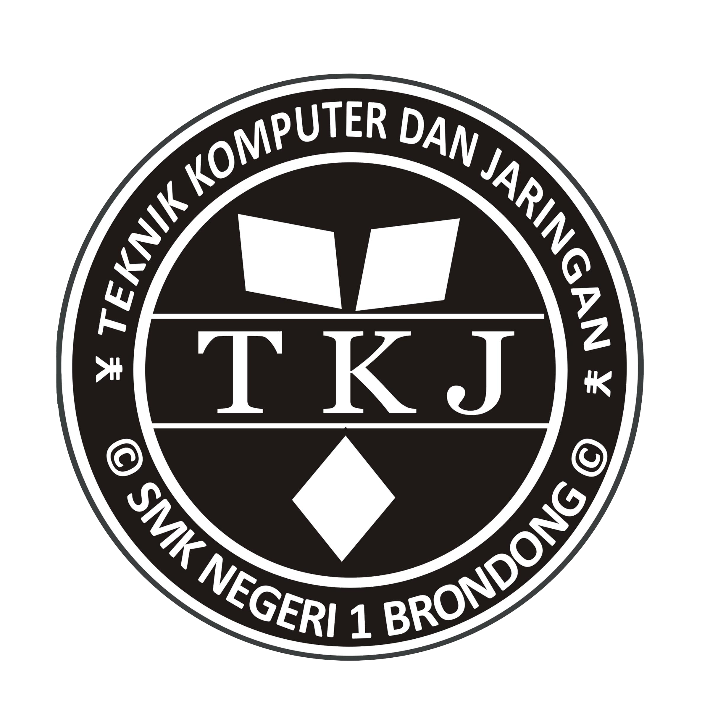

RUMAH


NUSANTARA ARSA
— Pilih Jalanmu, Hadapi Duniamu —
MENYIAPKAN DATA... 0%
✖
HALL OF FAME
Top Petualang Nusantara Arsa
Memuat Data...

🔊 AUDIO SETTING
Nyalakan suara untuk pengalaman terbaik?

NUSANTARA ARSA
- Pilih Jalanmu, Hadapi Duniamu -
GERBANG PULAU
LOGIN AKUN
Belum punya akun? DAFTAR BARU ✨
📡 Real-time Player Tracking
0
🟢 ONLINE
0
⚫ OFFLINE
0
👥 TOTAL SISWA
0%
📊 % KEHADIRAN
Pantau aktivitas dan lokasi siswa secara langsung.
| Siswa & Email | Last Save | Status & Role | Lokasi (Map) | HP/Energy | Aksi |
|---|
💬 Kirim Pesan Konseling BK
Kepada: -
PILIH KARAKTERMU
SELAMAT DATANG
Halo, Siswa!
Kelas: Umum
MASA TRIAL BERAKHIR
Perjalananmu telah mencapai batas waktu.
Memuat refleksi karir...
"Hidup adalah tentang belajar dari kesalahan."
*Perhatian: Save data akan di-reset untuk memulai lembaran baru.
🏝️ NUSANTARA ARSA · LAPORAN AKHIR
POTRET MASA DEPANKU
—
Hari ke-1 · Tahun 1
📌 IDENTITAS PERJALANAN
Jalur yang Dipilih
—
Total Hari Dimainkan
—
Level Karakter
—
Total Aset Akhir
—
Status Spesial
—
Jurnal Refleksi
—
📊 PROFIL KOMPETENSI
⚡ ANALISIS DIRI
Kompetensi Kuat
—
Perlu Dikembangkan
—
🎓 REKOMENDASI MENTOR BUDI
...
NUSANTARA
ARSA
2025
—
“Engkau telah belajar berharap di Pulau Arsa. Kini, saatnya hidup sesungguhnya dimulai.”
Jalan Kesini
SORTIR BARANG!
Masukkan barang ke rak yang benar.
Skor: 0
📦
Item
JALUR KARIR
REALITA DUNIA KERJA
🛠️ SKILL UTAMA YANG DIBUTUHKAN
💡 TAHUKAH KAMU?
...
KONSEKUENSI NYATA
📊 FAKTA DUNIA NYATA
Loading...
Apa yang akan kamu lakukan berbeda?
0 / 20 karakter minimum
Refleksi wajib sebelum melanjutkan game 🔒
▲
Notifikasi
📱
🔥
📜
🎣 SEDANG MEMANCING 🎣
JURNAL REFLEKSI
Bagaimana harimu di dunia Nusantara Arsa?
🎁 Reward:
Tulis minimal 20 karakter untuk lihat reward~
0 karakter
✨ Kahyangan Wilis
✨ 0 Debu
💎 0
🌟 0
🍽️ 0
👥 0/1
🍽️ Stok: 0 porsi
— / —
☁️ Tersimpan